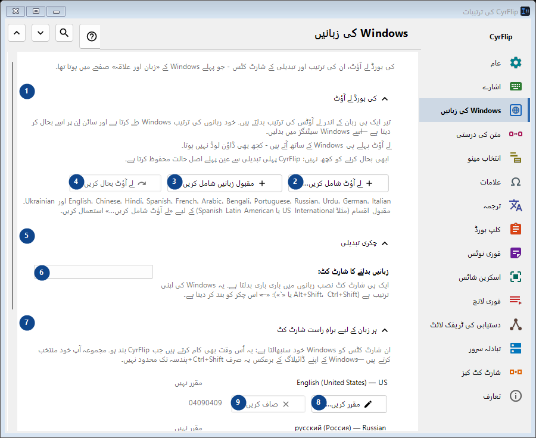
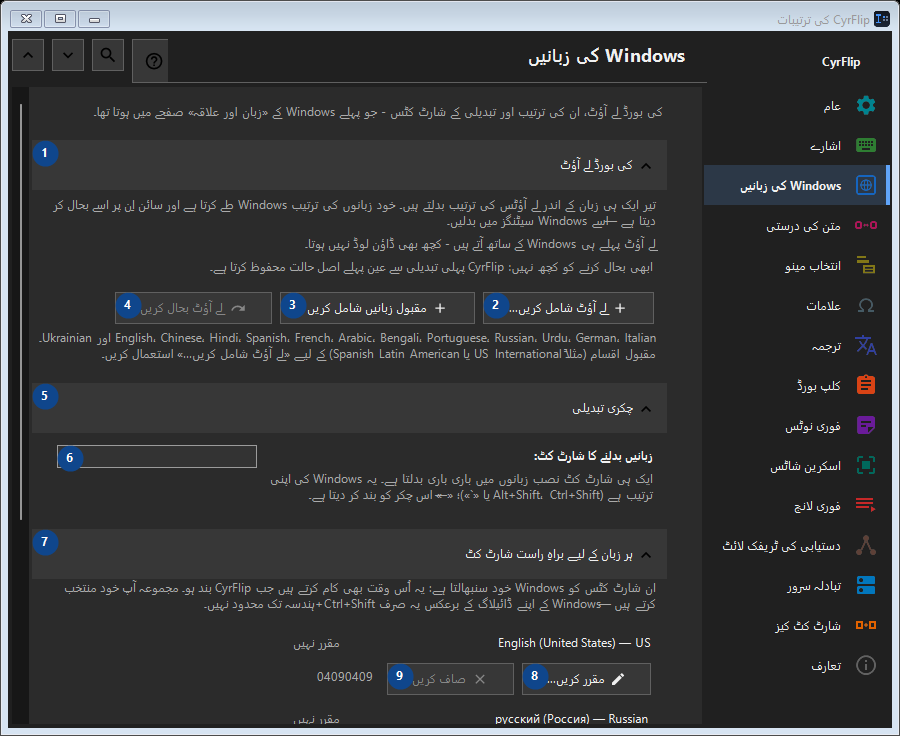

Windows کی زبانیں
مقصد
کی بورڈ لے آؤٹ، ان کی ترتیب اور تبدیلی کے شارٹ کٹس - جو پہلے Windows کے «زبان اور علاقہ» صفحے میں ہوتا تھا۔


استعمال کی ترتیب
ترتیبات فوراً لاگو ہوتی ہیں۔ کوئی لازمی ترتیب نہیں؛ نیچے کے گروپ استعمال کریں۔
عناصر
1. کی بورڈ لے آؤٹ
درج شدہ کارروائی کے لیے یہ حکم استعمال کریں۔ قبول کرنے سے پہلے تصدیق پڑھیں۔
آپ کے شارٹ کٹ2. لے آؤٹ شامل کریں...
درج شدہ کارروائی کے لیے یہ حکم استعمال کریں۔ قبول کرنے سے پہلے تصدیق پڑھیں۔
آپ کے شارٹ کٹ3. مقبول زبانیں شامل کریں
درج شدہ کارروائی کے لیے یہ حکم استعمال کریں۔ قبول کرنے سے پہلے تصدیق پڑھیں۔
آپ کے شارٹ کٹ4. لے آؤٹ بحال کریں
ابھی بحال کرنے کو کچھ نہیں: CyrFlip پہلی تبدیلی سے عین پہلے اصل حالت محفوظ کرتا ہے۔ یہ عنصر ابھی دستیاب نہیں۔ پہلے خصوصیت فعال کریں یا اندراج منتخب کریں۔
آپ کے شارٹ کٹ5. چکری تبدیلی
درج شدہ کارروائی کے لیے یہ حکم استعمال کریں۔ قبول کرنے سے پہلے تصدیق پڑھیں۔
آپ کے شارٹ کٹ6. زبانیں بدلنے کا شارٹ کٹ
ساتھ کے لیبل کے مطابق قدر منتخب یا درج کریں۔ آگے بڑھنے سے پہلے جانچیں۔
آپ کے شارٹ کٹ7. ہر زبان کے لیے براہِ راست شارٹ کٹ
درج شدہ کارروائی کے لیے یہ حکم استعمال کریں۔ قبول کرنے سے پہلے تصدیق پڑھیں۔
آپ کے شارٹ کٹ8. مقرر کریں... - English (United States) - US
درج شدہ کارروائی کے لیے یہ حکم استعمال کریں۔ قبول کرنے سے پہلے تصدیق پڑھیں۔
آپ کے شارٹ کٹ9. صاف کریں - English (United States) - US
درج شدہ کارروائی کے لیے یہ حکم استعمال کریں۔ قبول کرنے سے پہلے تصدیق پڑھیں۔ یہ عنصر ابھی دستیاب نہیں۔ پہلے خصوصیت فعال کریں یا اندراج منتخب کریں۔
آپ کے شارٹ کٹ10. مقرر کریں... - русский (Россия) - Russian
درج شدہ کارروائی کے لیے یہ حکم استعمال کریں۔ قبول کرنے سے پہلے تصدیق پڑھیں۔
آپ کے شارٹ کٹ11. صاف کریں - русский (Россия) - Russian
درج شدہ کارروائی کے لیے یہ حکم استعمال کریں۔ قبول کرنے سے پہلے تصدیق پڑھیں۔ یہ عنصر ابھی دستیاب نہیں۔ پہلے خصوصیت فعال کریں یا اندراج منتخب کریں۔
آپ کے شارٹ کٹ12. شارٹ کٹس بحال کریں
ابھی بحال کرنے کو کچھ نہیں: CyrFlip پہلی تبدیلی سے عین پہلے اصل حالت محفوظ کرتا ہے۔ یہ عنصر ابھی دستیاب نہیں۔ پہلے خصوصیت فعال کریں یا اندراج منتخب کریں۔
آپ کے شارٹ کٹ13. Windows کی ترتیبات
درج شدہ کارروائی کے لیے یہ حکم استعمال کریں۔ قبول کرنے سے پہلے تصدیق پڑھیں۔
آپ کے شارٹ کٹ14. Windows کی ترتیبات کھولیں
Windows کی ترتیبات کھولتا ہے، جہاں ڈسپلے زبان (یعنی خود Windows کا ترجمہ) نصب کی جاتی ہے۔
آپ کے شارٹ کٹ